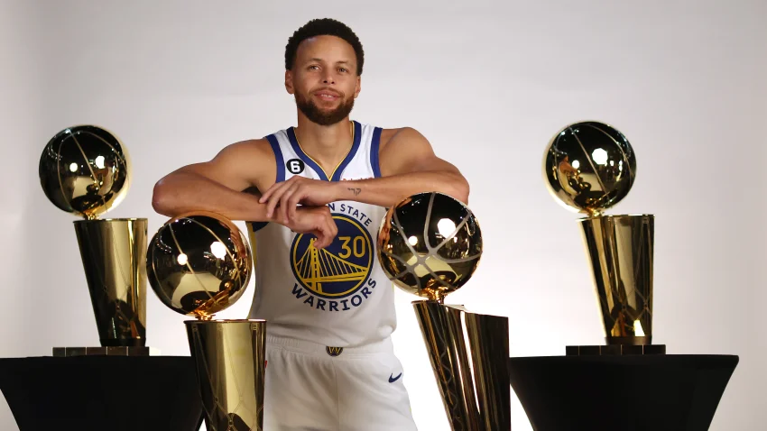
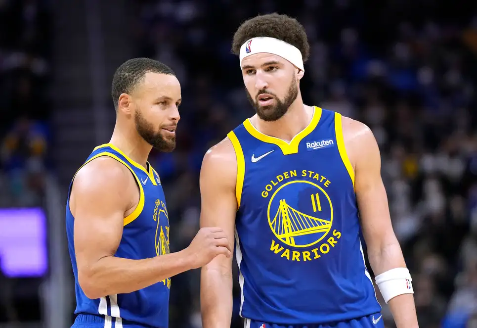
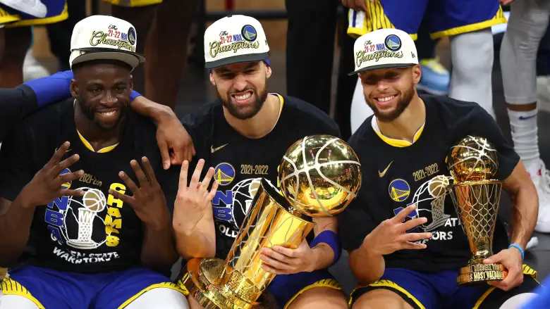

Basketballweb || Website about basketball for you.
The Golden State Warriors are one of the best teams in the NBA. It was originally based in Philadelphia as the Philadelphia Warriors in 1946 before moving into the San Fracisco Bay Area in 1962. Then, in the 2019-2020 NBA season, the team changes its logo and arena from Oracle Arena at Oakland, California, to Chase Center at San Francisco, California. They had 7 championships in their franchise history in the years of 1947, 1956, 1975, 2015, 2017, 2018, and 2022. The Warriors had the best record in the NBA in the 2015-2016 NBA season with 73 wins and 9 loses.
Stephen Curry is one of the greatest shooters in NBA history, having been the most number of 3-point shots in NBA history. He is notable by changing the game because of his great shooting at 3-points, which revolutionized the game into having more 3-point shots. He was drafted as the 7th overall pick in the 2009 NBA Draft and has his jersey number 30. He became an MVP (Most Valuable Player) in 2015 and also the following year where he was voted unanimously and being the lead scorer of the season while shooting above 50-40-90 or 50% field goal, 40% 3-point field goal, and 90% free throw field goal. He also finally got his first NBA Finals MVP in his fourth championship title and also had the first-ever Western Confeerence Finals MVP and All-Star MVP. He is an 8-time NBA All-Star and an 8-time All NBA selection. He is also a three-point contest champion in the 2015 NBA All-Star 3-point contest.
Klay Thompson has an inspiring comeback story, from having a torn ACL in 2019 and Torn Achilles in 2020 to being back in the NBA in January 2022 after having a year of recovery from his injury. He is one of the splash brothers; the other one is Stephen Curry because both of them are great shooters. Klay Thompson was drafted as the 11th overall pick in the 2011 NBA draft and has his jersey number 11. He is also a four-time NBA champion, five-time NBA All-Star, two-time All-NBA Third Team honoree, and one-time NBA All-Defensive Second Team. He won the 3-point contest beating his teammate Stephen Curry.
Draymond was drafted 35th overall in the 2012 NBA Draft and has his jersey number 23. He is a four-time NBA Champion like the splash brothers, four-time NBA All-star, two-time member of the All-NBA team, seven-time NBA All-Defensive team, 2017 Defensive Player of the Year, and 2017 NBA lead stealer. Unlike the Spash Brothers in that they play as guards, Green plays as a power forward. He has a big role in the team, having a great IQ and having a great veteran's move in his plays.
The Warriors were celebrating their fourth championship in the last 8 NBA seasons. Having a comeback from Klay Thompson, being injured in Game 6 of the 2019 NBA Finals and losing it to being an NBA champion again. The Big 3 stays loyal to their team and having 4 championships each in 2015, 2017, 2018, and 2022. This 2022 NBA Finals is different from the first 3 since it has another bunch of players; some of them were young like Jordan Poole, on whom they drafted, and rookies like Jonathan Kuminga and Moses Moody, on whom they also drafted it to the team. They also have Andre Iguodala, who came back from the team after being with the Miami Heat, and Andrew Wiggins, who had been improving well in his stay at the team. Kevon Looney, Otto Porter Jr., Nemanja Bjelica, and Gary Payton II were also role players in the season that led the team to another championship. Their head coach is still Steve Kerr.